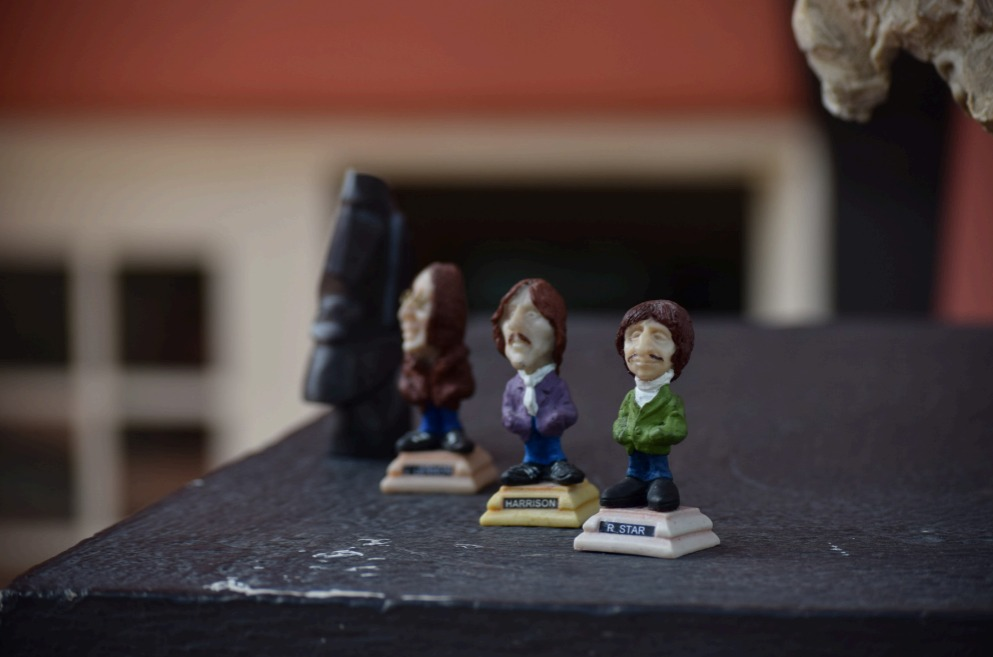
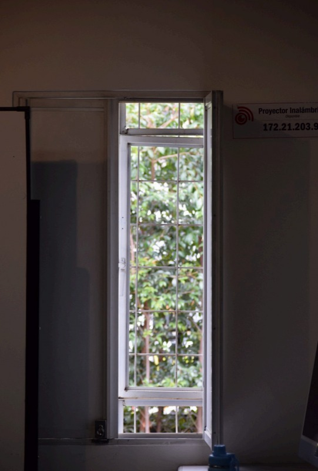
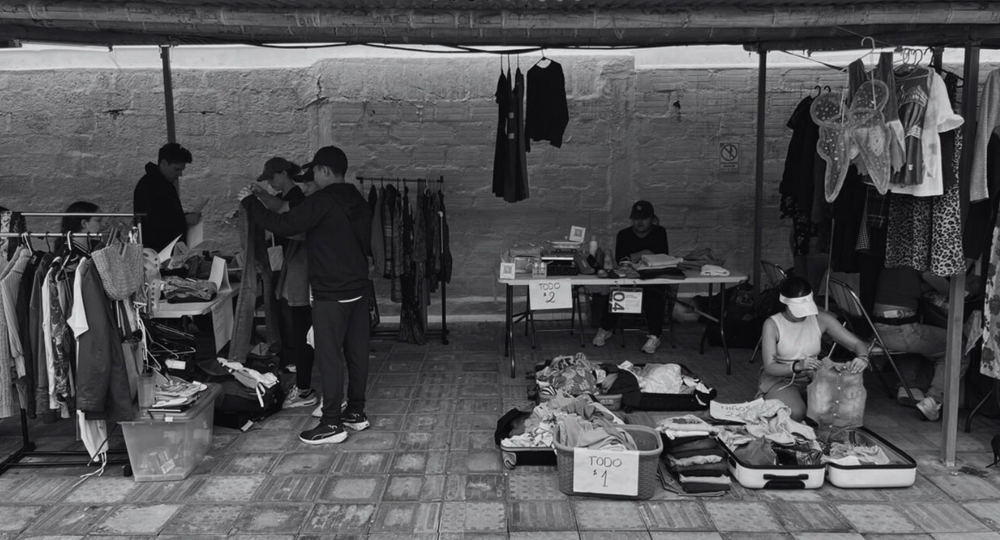
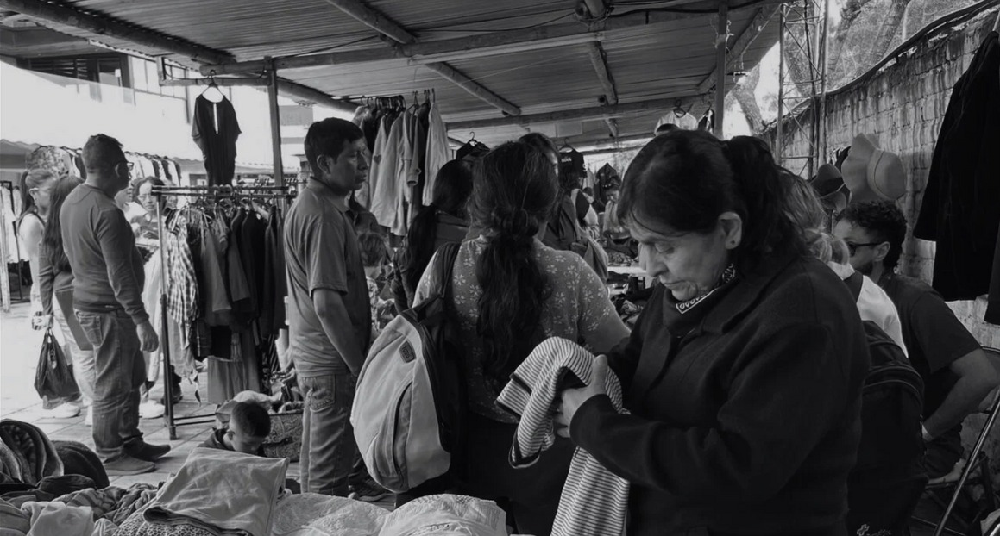
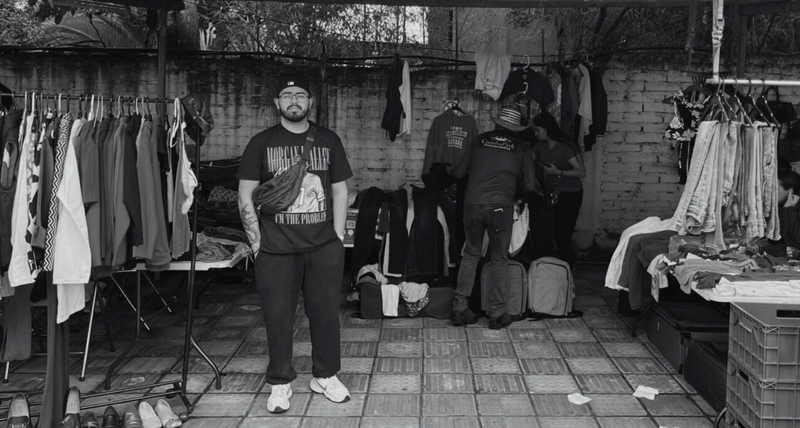
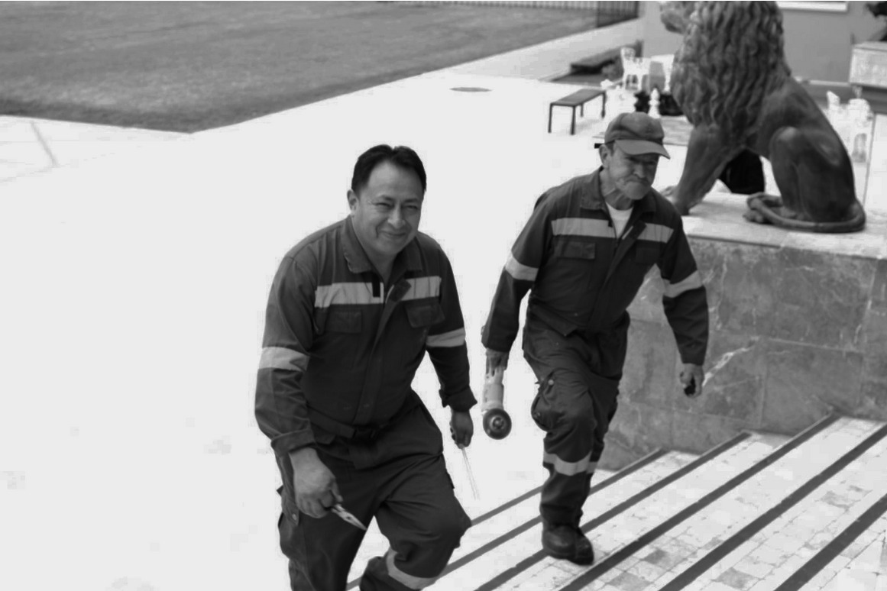

Photography Portfolio
Photography has become my way of pausing the fleeting moments of life, observing what often goes unnoticed, and translating experiences into visual stories. Each image in this portfolio reflects my exploration of light, composition, and emotion capturing the subtleties of human experience and the world around us.
For me, photography is not only about aesthetics but also about awareness. It invites a slower way of looking at the world, encouraging patience and curiosity in every frame.
This portfolio represents an ongoing journey of observation and experimentation. Each photograph is a step in refining my visual language, exploring new perspectives, and deepening my relationship with the art of seeing. As you move through these images, my hope is that they invite you to pause as well—to notice the quiet details, the fleeting gestures, and the beauty hidden within the ordinary.





